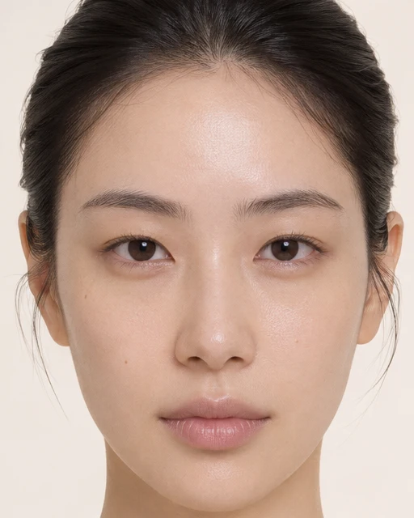
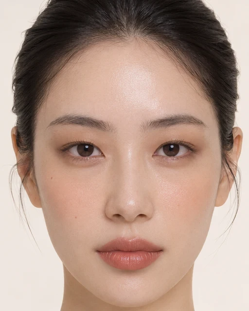
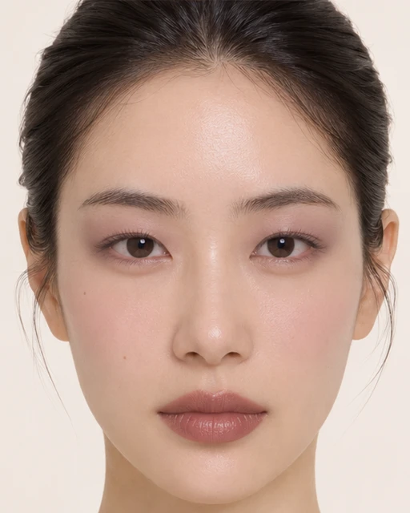

传播趋势
社交传播推动色彩探索
韩国个人色彩诊断经由短视频和 K-Beauty 传播，进入部分年轻消费者的造型探索和赴韩行程。公开报道也记录了诊断与彩妆、穿搭选择的联系。
01 / MARKET OPPORTUNITY
个人色彩诊断的关注度持续扩展，但专业服务的体验门槛与日常配色需求之间仍存在机会。
传播趋势
韩国个人色彩诊断经由短视频和 K-Beauty 传播，进入部分年轻消费者的造型探索和赴韩行程。公开报道也记录了诊断与彩妆、穿搭选择的联系。
单店公开报价
首尔 ColorLover 基础服务，约 40 分钟。含英语咨询的公开价格为 ₩64,900。咨询需预约，包含线下比色与人工判断。
应用机会
当用户把色彩倾向用于彩妆、发色或服装选择时，会进一步搜索具体颜色、对比上脸表现和购买选项。
拍照测色工具可以给出季型标签，用户仍要自己搜索色号、想象上脸效果、协调眼颊唇。LOOK2ME COLOR 将结果连接到一次具体妆容决策。
让低门槛的个人色彩探索，支持一次具体的日常美妆选择。
02 / USER INSIGHTS
18 岁以上、对个人色彩和美妆感兴趣的人，希望把配色建议带到日常化妆与选购。从测试结果到实际选择，用户仍要判断上脸效果、套妆协调和建议可信度。
在尚未确认价值前，用户可能不愿先投入线下咨询时间和费用。
「冷夏」「暖春」给出方向，具体的口红、眉色、眼影和粉底还要自己选。
眼影、腮红和眉色需要一起判断。其他模特的五官和光线不同，用户要想象在自己脸上的效果。
用户可能只想换唇色，却需要重做整个妆容。公开妆教能把生成结果转化为具体画法；光线、滤镜和设备带来的误差也需要说明。
研究备注 · 以上是待验证的用户需求假设，尚未进行访谈验证。
如何用 AI 把个人色彩探索变成低门槛、可解释、可调整的美妆配色决策？
03 / PRODUCT POSITIONING
LOOK2ME COLOR 结合初步色彩分析、妆容生成、局部编辑和风格参考。在用户授权的照片和明确偏好上建立可操作的建议。
照片和简短问答形成一份可确认、可更改的档案。
对照同一构图，比较不同风格的唇颊与眉眼。
只改涉及的颜色与区域，允许回到前一版。
围绕已有口红补齐搭配，并找到可实践的方法和搜索关键词。
生成 → 在同一张脸上比较风格妆效；调整 → 只改不满意的部分；复用 → 围绕已有口红补齐完整妆容。三者共享已确认的色彩档案。
04 / PRODUCT STRATEGY
同一份已确认档案，为不同场景、妆容和已有彩妆提供共同的依据。
从自拍提取可观察信息，以逐题选择收集颜色偏好、场景和妆感。检测与用户修正保留各自来源。
档案版本关联风格、场景、唇色锚点与每个妆容。切换档案后，旧妆效不被当成新档案结果。
先得到结构化妆容方案，再把色值和画法一起交给图像编辑。修改单部位时保留其余色值。
从试妆到色卡、可操作画法和真实案例。复制检索词，比较实际商品与质地。
探索驱动：自拍 → 色彩问答 → 确认档案 → 选择风格 → 对比本人妆效 → 局部调整 → 保存指南。
资源驱动：已有口红 → 确认 HEX → 固定唇色 → 补全眼影、腮红和眉色 → 生成并保存；自拍试妆可选。
两条路径共享同一份色彩档案，输出一致的六模块报告。
首版聚焦可操作的美妆决策。商品交易、全量色号库与长期库存管理列为后续机会。
用一份明确的档案组织推荐和编辑，减少用户重复判断和重复输入。
05 / CORE EXPERIENCE 01
用连续的色彩过渡和逐题选择，引导用户从兴趣进入一份可以修正的档案。
单色系渐变与鼠标扰动建立识别。上传自拍和已有口红两条入口直接通往各自任务。
打开品牌首页 ↗自然光、正面、单人、关闭滤镜。浏览器定位与旋转裁切，并提示过暗、过曝或画质偏软。授权后，才调用多模态分析。
五道单题收集唇色、饰品、饱和度、妆感和场景。每一题以单独色彩主题表达，支持返回、跳过和进度。
显示可见色深、冷暖、明度、饱和度、明暗对比、发眉和季型候选。切换冷暖、浓淡与可见特征后，结果用于下一步方案。
逐题选择代替长表单，减轻首次输入负担；同一构图比较妆效，减少想象成本；局部调整保留满意部分，避免整套重做；搜索关键词连接小红书妆教，缩短从报告到实践的路径。
把复杂判断组织成轻量输入，给用户明确的修正机会。
06 / CORE EXPERIENCE 02
让抽象的色值能在同一构图中对照，先看风格之间的区别，再看哪里值得调整。



日常自然、温柔氛围、气场表达、风格探索共 16 种模板。按场景、强度和调色偏好每次选择两到三种。
拆分唇妆、眼影四色到六色、腮红位置、眉形与底妆质感，记录冷热、透明度和搭配理由。
同一张裁切原图作为参考，依次返回完整妆效。档案、妆容、图片分别版本化，失败可重试，旧图不能冒充新色。
尽可能保留原五官、肤色、发型表情和背景。图片用于妆效探索，真品的质地与上脸仍需试色，改变五官的输出需人工复核。
07 / EDITABLE MAKEUP
两条操作都保留此前满意的输入，修改的范围与后果明确可见。
A / 指定部位编辑
选择唇部 → 设置更深、更浅或 HEX → 预览新色 → 提交遮罩重绘 → 比较修改前后或撤销。锁定的眼影、腮红与眉色保留原值。
B / 已有口红搭配
确认名称和 HEX → 固定唇色 → 补全眼、颊、眉 → 生成妆效并比较。上传口红照片提候选色属于后续增强，当前先做手动确认。

减少整套重做，把已经拥有的口红变成可以复用的妆容条件。
08 / BEAUTY PRACTICE & BUSINESS VALUE
用可复制的色值与画法承接妆效，再以可核实的案例和商品资料约束推荐。
唇色包含质地和搜索词，眼影有色阶与用途，腮红与眉色给位置和搭配。底妆提示深浅与冷暖，有可信品牌资料时才允许推荐具体色号。发色与穿搭补充同一风格的组合。
依据妆容色系、风格和技法排序真实明星与博主案例，点出处核对原内容。参考关系来自眼尾、晕染、唇色和腮红布局，不做面貌相似评级。
报告保存到当前浏览器，可直接下载 PDF 与分享卡，方便之后复用。
低门槛探索获客 → 场景妆容、编辑与彩妆复用形成持续使用 → 教程及商品搜索承接选择 → 验证高级妆容、档案与可核实色号服务的付费意愿。
观察测试完成率、生成完成率、风格查看率、局部修改、反向搭配、保存率、案例点击与关键词复制。商业方向与指标均待真实验证，暂无收入或转化数据。
首次色彩探索建立档案，彩妆复用与可实践参考支持日常回访。
09 / WARDROBE COLOR LOGIC
穿搭建议从用户确认的冷暖倾向、明度和色彩浓度出发。季型只作为候选方向；真正的选择回到自然光下脸旁的颜色对照。
把自拍的可见信息、问答偏好与用户修正放在一起，保留光线、滤镜和现有妆容带来的不确定性。
用主打色确定气质，搭配色负责日常复用，点缀色只占小面积；冷浅色和纯白作为对照，不直接当成禁令。
先用屏幕色布模拟感受方向，再用真实衣物核对肤色、眼下暗沉与五官清晰度。屏幕 HEX 不等于面料实色。
把柔和浅色放在面部附近，深绿色稳定下半身，再用棕色包收住整体。
用同色系深浅营造面料层次，让金色饰品保持克制的小面积点亮。
让唇色呼应上衣，避免妆容和衣服各自争夺视觉中心。
报告给出中文色名、HEX 和可穿的组合；多色试穿负责快速比较，最终由真实面料和本人判断确认。
10 / AI IMPLEMENTATION & DESIGN REFLECTION
把模型调用、编辑合成与用户决策拆开验证，明确现在能验证到哪里。
AI Agent 辅助需求拆解、研究、交互推演与视觉方案迭代，并参与工程实现、接口校验和测试。设计师负责最终体验取舍、视觉判断与妆效审核。
优先做真实用户任务，推荐与生图分离。自拍不能替代专业颜色测量，生成结果可能有面部偏差。商品与案例须可核实。云端不可用时保留手动档案和配色建议，当前正式入口不展示示例。
已实现浏览器自拍定位、五题与手动档案、16 模板、选色和报告。多模态与图像接口已接入，Secret 已加载，但真实照片图像编辑尚未通过端到端验收。底妆只在已确认档案符合官方描述时列出少量可核实色阶。口红照片可提取参考色，需用户核对；小红书直接索引未开放。
线上诊断：11 月 17 日真实调用中，/api/analyze-face 与 /api/generate-makeup-plan 均返回 HTTP 429，说明请求已到达服务但受到上游额度或限流约束；尚无真实本人妆效成功返回的证据。解决路径：核对 OpenAI 项目的用量、计费与模型权限，先用一张获授权照片做单次整妆调用，再测试局部遮罩、保真与重试。预期目标：整妆图能返回且保留身份与背景，局部编辑只改变指定区域；同时记录成功率、耗时与失败原因。
11 / CAPABILITY & VERIFICATION
把规则推荐、图像生成与尚未完成的资料标注分别呈现，避免把推测写成确定结论。
自拍上传与质量提示、五题问答、手动修正冷暖调、16 套风格、六模块报告、单部位配色调整、已有口红反向搭配、PDF 和分享卡下载。
冷暖调用于调整色板与风格排序；四季季型保留为可讨论的候选。单张照片的 RGB 均值不能可靠推断底色，妆法也不由脸型自动决定。
服务端 Secret 已配置，生成与局部编辑的请求链路已有模拟测试。真实授权照片的返回图、面部保真、局部锁定和失败重试仍需实测，未返回时明确显示“预览待更新”。
前端展示 6 位中、韩、日艺人的公开造型候选与原图链接，按风格画法推荐。32 人扩展库仍需逐张核对摄影署名、许可、肖像使用及可见妆法，再逐步上线。
使用获授权照片走完整生成与局部修改流程，核对原图和新图的身份、背景与非目标部位；记录接口错误、耗时与重试结果。对具体商品色号和明星图片逐条补齐来源、许可与适用条件。